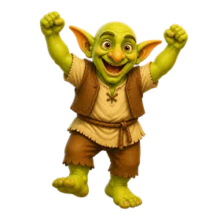
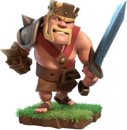
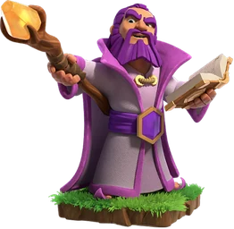
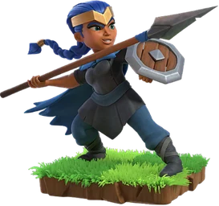
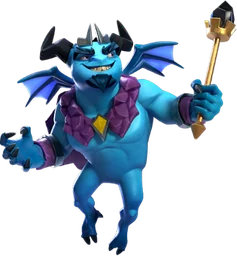
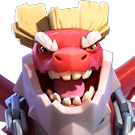

Clash of Clans Heroes
Updated: 26 August 2026 · By the Goblins Farm team

All 6 Home Village heroes with the full level table for each one, read from the game files.
Home Village Heroes

Barbarian KingThe first hero, the standard funnel opener, and a durable brawler. Archer QueenThe most impactful hero in the game, and the centre of the Queen walk.
Archer QueenThe most impactful hero in the game, and the centre of the Queen walk.

Grand WardenA support hero who makes the rest of the army much harder to kill.
Royal ChampionTargets defences, jumps walls, and goes where you point her.
Minion PrinceA flying hero, which changes what a hero can be sent to do.
Dragon DukeA Town Hall 15 hero with a lot of hitpoints and two equipment slots.Goblins Farm is not affiliated with, endorsed by, sponsored by, or specifically approved by Supercell. Clash of Clans is a trademark of Supercell Oy. This material is unofficial fan content produced under Supercell's Fan Content Policy. Game values change with every update; always verify in-game before committing an upgrade.